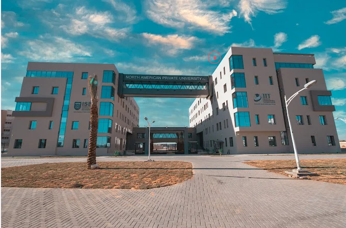

Mon Expérience à l'IIT
Un environnement d'apprentissage exceptionnel

Depuis mon arrivée à l'Institut des Technologies de l'Information en septembre 2025,
j'ai découvert un environnement stimulant et propice à l'apprentissage. L'IIT offre
des infrastructures modernes avec des laboratoires informatiques bien équipés et
une bibliothèque riche en ressources techniques.
Les salles de cours sont spacieuses et climatisées, ce qui permet de suivre les
cours dans de bonnes conditions. De plus, la connexion internet est stable et rapide,
essentielle pour nos recherches et nos projets en ligne.
Des enseignants passionnés et compétents
Les enseignants de l'IIT sont non seulement compétents mais également passionnés
par leur domaine. En particulier, M. Mohamed Karim Abdmouleh, notre professeur de
Programmation Web, nous transmet sa passion pour le développement web avec des cours
clairs, pratiques et toujours à jour avec les dernières technologies.
Grâce à son approche pédagogique, j'ai pu acquérir des compétences solides en HTML5,
CSS3 et JavaScript. Les travaux pratiques nous permettent d'appliquer immédiatement
les concepts théoriques, ce qui facilite grandement l'apprentissage.
Un programme complet et équilibré
Le programme de Génie Informatique à l'IIT couvre tous les aspects essentiels du
développement logiciel : programmation web, bases de données, algorithmique,
programmation orientée objet, réseaux et systèmes d'exploitation.
Points forts du programme :
- Équilibre parfait entre théorie et pratique
- Projets concrets et applicables en entreprise
- Technologies modernes et actuelles
- Accent sur les méthodologies agiles
- Préparation au monde professionnel
Une vie étudiante dynamique

Au-delà des cours, l'IIT organise régulièrement des événements enrichissants :
conférences avec des professionnels du secteur, hackathons, journées de formation
sur des sujets d'actualité comme l'Intelligence Artificielle, et ateliers pratiques.
Ces événements nous permettent de développer notre réseau professionnel, de découvrir
les tendances du marché et de nous préparer au mieux pour notre future carrière.
J'ai eu l'occasion de participer à plusieurs formations et événements qui m'ont
permis d'élargir mes connaissances et de rencontrer des professionnels du secteur.
Préparation au monde professionnel
L'IIT ne se contente pas de nous former techniquement. L'institut nous prépare
également au monde professionnel à travers :
- Des stages obligatoires en entreprise
- Des projets en équipe pour développer le travail collaboratif
- L'apprentissage des méthodologies agiles (Scrum, Kanban)
- L'utilisation d'outils professionnels (Git, GitHub, IDE modernes)
- Des présentations orales pour améliorer nos compétences en communication
Mon conseil aux futurs étudiants

Si vous êtes passionné par l'informatique et le développement, l'IIT est l'endroit
idéal pour développer vos compétences. Mon conseil : soyez curieux, participez aux
événements, travaillez vos projets avec sérieux et n'hésitez pas à poser des questions
à vos enseignants.
L'IIT vous donnera toutes les clés pour réussir votre carrière dans le domaine des
technologies de l'information. Profitez de toutes les opportunités qui vous sont
offertes et n'ayez pas peur de sortir de votre zone de confort.
Remerciements
Je tiens à remercier particulièrement M. Mohamed Karim Abdmouleh pour son excellent
enseignement en Programmation Web, ainsi que tous les enseignants et le personnel
administratif de l'IIT pour leur dévouement et leur soutien constant.